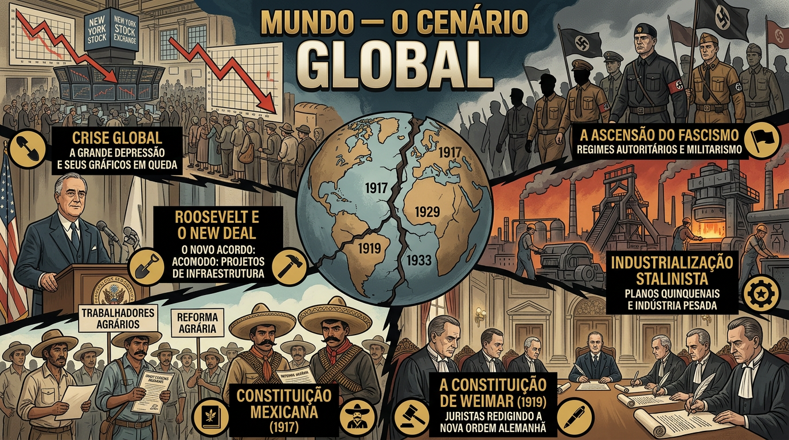

O Contexto
Nacional e Mundial

- ⚡Crise da República Velha: colapso da política café-com-leite
- 🔫Revolução de 1930: Getúlio Vargas chega ao poder pelo golpe
- ⚔️Revolução Constitucionalista (1932): SP exige retorno ao Estado de Direito
- 🏛️Governo Provisório (1930–34): pressão crescente por constitucionalização
- 🌾Crise do Café: Grande Depressão destrói a economia cafeeira brasileira
- 🏭Industrialização: emergência do proletariado urbano e tensões sociais

- 📉Grande Depressão (1929): colapso econômico global abala democracias
- 🦅New Deal (EUA, 1933): Roosevelt redefine o papel intervencionista do Estado
- ✝️Ascensão do Fascismo: Mussolini (Itália) e Hitler (Alemanha) ao poder
- ☭Stalinismo na URSS: modelo de Estado centralizador como referência global
- 🇲🇽Constituição Mexicana (1917): influência direta nos direitos trabalhistas
- ⚡Constituição de Weimar (1919): modelo de democracia social que inspirou juristas
O Brasil de 1934 vivia uma encruzilhada: entre o fascismo europeu, o socialismo soviético e o liberalismo americano, a Assembleia Nacional Constituinte optou por um modelo único — o Estado Social Democrático.
⚡ Fim da República Velha
A "política do café-com-leite" — alternância de poder entre SP e MG — entrou em colapso em 1930. A crise cafeeira, agravada pela Grande Depressão, esvaziou as bases das oligarquias rurais e gerou pressão por renovação política.
🔫 Revolução de 1930 e Governo Provisório
Com apoio do Exército e oligarquias dissidentes, Getúlio Vargas tomou o poder em outubro de 1930. Instaurou o Governo Provisório, dissolveu o Congresso e passou a governar por decreto — era o fim formal da República Velha.
⚔️ Revolução Constitucionalista de 1932
São Paulo pegou em armas exigindo retorno ao Estado de Direito. Derrotados militarmente após três meses, os paulistas venceram politicamente: Vargas foi forçado a convocar uma Assembleia Nacional Constituinte.
🏭 Industrialização e Classe Trabalhadora
A urbanização criou um proletariado crescente sem nenhuma proteção legal. Jornadas de 12 a 16 horas, trabalho infantil e ausência de férias tornaram inadiável a constitucionalização dos direitos sociais.
📉 Grande Depressão (1929)
A quebra da Bolsa de Nova York desencadeou uma crise global sem precedentes. No Brasil, o preço do café despencou, destruindo a principal renda do país e precipitando a crise política que levou à Revolução de 30.
✝️ Fascismo e Autoritarismo
Mussolini governava a Itália desde 1922 e Hitler assumiu a Alemanha em 1933. Esses regimes influenciaram o Brasil pela Ação Integralista Brasileira (AIB) de Plínio Salgado, tensionando o processo constituinte.
🦅 New Deal e Intervencionismo
Roosevelt expandiu o papel do Estado com o New Deal em 1933, regulando mercados e protegendo trabalhadores. Essa ideia de Estado interventor influenciou diretamente os constituintes brasileiros de 1934.
⚖️ Constituições-Modelo
A Constituição de Weimar (1919) foi o principal modelo adotado pelos juristas brasileiros, combinando direitos políticos com direitos sociais. A Constituição Mexicana de 1917 também influenciou, especialmente nas normas trabalhistas.